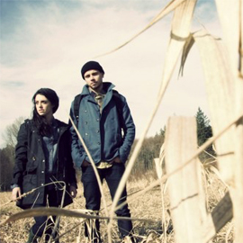

О компании
PARM Workshop – настоящая мастерская аксессуаров ручной работы
Уникальный бренд, возникший и развивающийся в Перми. Здесь вы найдете сумки и рюкзаки оригинальных моделей и самой разной конфигурации, а также все, что может в них поместиться – портмоне, бумажники, визитницы. Кожаные браслеты от Parm станут приятным дополнением к вашему стилю.
Название PARM Workshop – своеобразная производная от слов Пермь, Парма. Когда-то здешние места носили имя Парма: наш город стоял на непроходимых лесах и возник только благодаря людям, которые умели работать и не боялись труда. Название бренда показывает не только идентичность создателя, принадлежащего пермской земле, но и отражает трудозатратный и скрупулезный процесс создания каждой вещи. В названии бренда за это отвечает слово Workshop: все вещи действительно созданы вручную пермским дизайнером Игнатом Выходовым: от этапа разработки лекала, до каждого шва и каждой
кнопки.
Аксессуары PARM выполнены из натуральных экологичных материалов – кожи, сукна, с использованием качественной фурнитуры. PARM Workshop включает в себя самые разные линии – от демократичных молодежных вещей, до удобных и практичных сумок, с которыми не стыдно появиться и деловому человеку. Сумки PARM пользуются популярны у самой разной аудитории: предпочтение стильным аксессуарам отдают как топ-менеджеры, так и юные модники. Аксессуары PARM – для всех, кто предпочитает динамичный городской образ жизни, стиль и комфорт. Уникальность бренда заключается не только в качестве, оригинальности моделей и ручной работе, на сегодняшний день PARM – единственный уверенно заявивший себя пермский бренд, выпускающий аксессуары, обладающие не только качеством и эргономичностью, но и индивидуальностью.
- 
Яркие цвета, различные формы и размеры,
на праздник и на каждый день, и даже в дальние
поездки (командировки или путешествия по свету),
каждый сможет подобрать то, что подходит
именно ему.
Уникальный бренд, возникший и развивающийся в Перми. Здесь вы найдете сумки и рюкзаки оригинальных моделей и самой разной конфигурации, а также все, что может в них поместиться – портмоне, бумажники, визитницы. Кожаные браслеты от Parm станут приятным дополнением к вашему стилю.
Название PARM Workshop – своеобразная производная от слов Пермь, Парма. Когда-то здешние места носили имя Парма: наш город стоял на непроходимых лесах и возник только благодаря людям, которые умели работать и не боялись труда. Название бренда показывает не только идентичность создателя, принадлежащего пермской земле, но и отражает трудозатратный и скрупулезный процесс создания каждой вещи. В названии бренда за это отвечает слово Workshop: все вещи действительно созданы вручную пермским дизайнером Игнатом Выходовым: от этапа разработки лекала, до каждого шва и каждой
кнопки.
Аксессуары PARM выполнены из натуральных экологичных материалов – кожи, сукна, с использованием качественной фурнитуры. PARM Workshop включает в себя самые разные линии – от демократичных молодежных вещей, до удобных и практичных сумок, с которыми не стыдно появиться и деловому человеку. Сумки PARM пользуются популярны у самой разной аудитории: предпочтение стильным аксессуарам отдают как топ-менеджеры, так и юные модники. Аксессуары PARM – для всех, кто предпочитает динамичный городской образ жизни, стиль и комфорт. Уникальность бренда заключается не только в качестве, оригинальности моделей и ручной работе, на сегодняшний день PARM – единственный уверенно заявивший себя пермский бренд, выпускающий аксессуары, обладающие не только качеством и эргономичностью, но и индивидуальностью.
Аксессуары PARM выполнены из натуральных экологичных материалов – кожи, сукна, с использованием качественной фурнитуры. PARM Workshop включает в себя самые разные линии – от демократичных молодежных вещей, до удобных и практичных сумок, с которыми не стыдно появиться и деловому человеку. Сумки PARM пользуются популярны у самой разной аудитории: предпочтение стильным аксессуарам отдают как топ-менеджеры, так и юные модники. Аксессуары PARM – для всех, кто предпочитает динамичный городской образ жизни, стиль и комфорт. Уникальность бренда заключается не только в качестве, оригинальности моделей и ручной работе, на сегодняшний день PARM – единственный уверенно заявивший себя пермский бренд, выпускающий аксессуары, обладающие не только качеством и эргономичностью, но и индивидуальностью.
Уникальный бренд, возникший и развивающийся в Перми. Здесь вы найдете сумки и рюкзаки оригинальных моделей и самой разной конфигурации, а также все, что может в них поместиться – портмоне, бумажники, визитницы. Кожаные браслеты от Parm станут приятным дополнением к вашему стилю.
Название бренда показывает не только идентичность создателя, принадлежащего пермской земле, но и отражает трудозатратный и скрупулезный процесс создания каждой вещи. В названии бренда за это отвечает слово Workshop: все вещи действительно созданы вручную пермским дизайнером Игнатом Выходовым: от этапа разработки лекала, до каждого шва и каждой кнопки.